Rather than using a simple text editor with limited features, you can use Visual Studio to easily create, edit and save markdown files both locally and with a source control repository such as GitHub. Even though Visual Studio is geared toward developers, this tool can accelerate your writing projects by making your editing process more efficient. This user guide will help you maneuver this environment without deing delayed by the interface and many other capabilities of Visual Studio.
To view the video tutorial, please click here.
Before you can easily edit markdown files in Visual Studio, you must first install the Markdown Editor. This all-in-one editor allows you to see a preview of your file in a separate window as you work. It also offers numerous helpful features including image drag n’ drop, keyboard shortcuts and syntax highlighting. To install the Markdown Editor, complete the following steps:
Click on Tools in the top menu.
i. Click on Extensions and Updates…
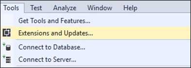
The Extensions and Updates window will open on the screen
Click on Online in the left side menu.
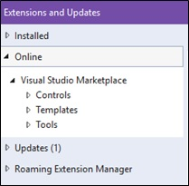
Type “markdown editor” into the search box
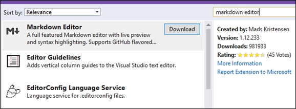
Results will automatically appear in the window
Click on Download next to Markdown Editor.
A progress window will appear and disappear once finished downloading
Click Close.
Close out of Visual Studio.
Another progress window will appear briefly followed by the VSIX Installer window
Click on Modify.
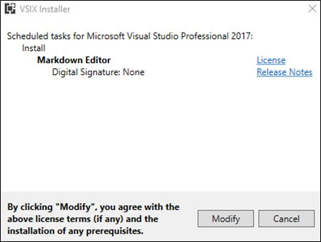
Modifications will be installed into Visual Studio
Click on Close.
You have now installed the Markdown Editor in Visual Studio and are ready to open a markdown file for editing.
If you already have a markdown file locally saved to your computer, it is quick and easy to open the file in Visual Studio for editing. To open a local markdown file, complete the following steps:
Open Visual Studio.
Click on File in the top menu.
i. Hover over Open until a second menu appears.
Click on File…
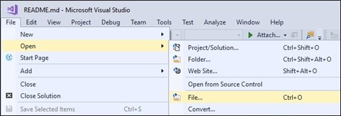
Navigate to the markdown file location.
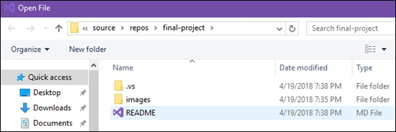
Double click the MD File (markdown file).
You have now opened the markdown file, and it is ready to be edited using Markdown Editor.
If you don’t already have a markdown file saved to your computer, you can open a markdown file within Visual Studio from source control. Source control, also known as version control, helps manage and control changes to documents to avoid overwriting errors when a team of people is working on a project collaboratively. You can copy projects from your team’s online source control repository onto your computer to make changes without compromising the original file. To open a markdown file from source control, complete the following steps:
Open Visual Studio.
Click File in the top menu.
i. Hover Open until a second menu appears.
Click Open from Source Control.
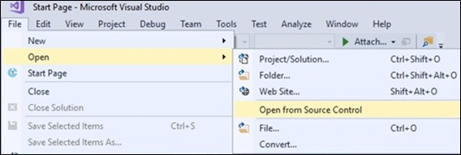
The Team Explorer – Connect side panel appears on the right of the screen
Click on Connect… within the GitHub connection.
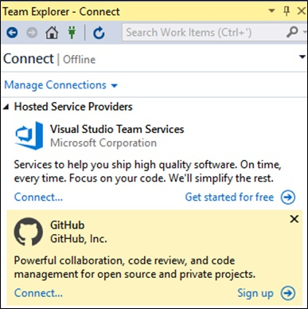
A sign in window for your GitHub account will appear on the screen
Sign into GitHub with your email and password.
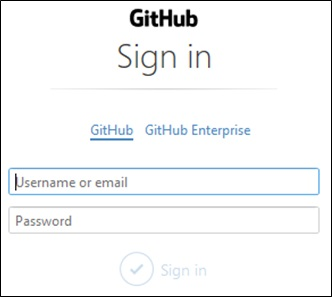
Your GitHub project folders will appear in the Team Explorer – Connect side panel
Click Clone under the GitHub connection.
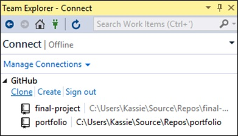
The Clone a GitHub Repository window will appear on the screen showing your project folders
Click on the project folder you want to clone to your local files.
Click on Browse next to the destination path.
The Browse for Folder window will appear on the screen
Select a local destination for your project folder.
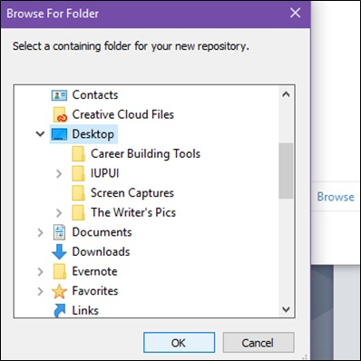
Click OK.
Click Clone.
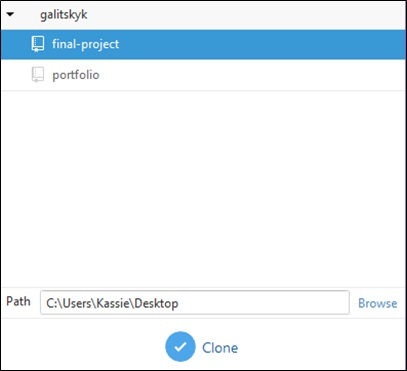
The Solution Explorer – Folder View side panel will appear on the right of the screen showing the folder you copied to your local files
Double click the .md file (markdown file).
You have now opened the markdown file, and it is ready to be edited.
Once you have opened the markdown file and edited it using the Markdown Editor, you can easily save your work to your local files. To save a local markdown file, complete the following steps:
Click File in the top menu.
i. Click Save As….
The Save File As window appears on the screen
Click the Save as Type dropdown menu
i. Click Markdown file
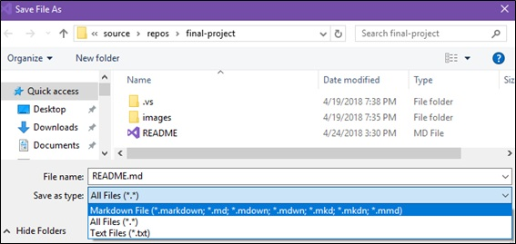
Click Save.
The Confirm Save As window appears on the screen
Click Yes.
The markdown file is now saved to your local files.
Once you have saved the markdown file to your local files and no more editing needs done, you can save, or upload, the edited markdown file back to the source control repository. This will replace the online file with the edited markdown file. To save a markdown file to source control, complete the following steps:
Click on the Team Explorer tab in the bottom right of the screen.
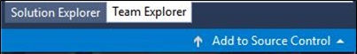
The Team Explorer – Connect side panel appears on the screen
Double click the project folder where the markdown file is saved.
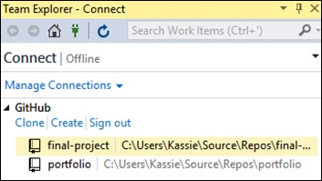
The markdown file will close and the Team Explorer – Home side panel will appear on the screen
Click on Changes within the project dropdown box.
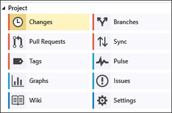
Type a brief description of the changes you made into the highlighted text box.
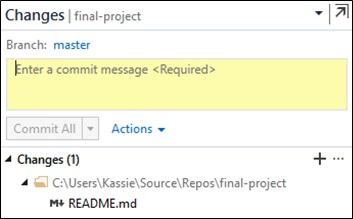
Click Commit All.
Changes have now been confirmed and are ready to sync
Click the blue back arrow in the Team Explorer - Changes top menu.
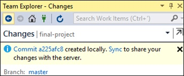
Click Sync within the project dropdown box.
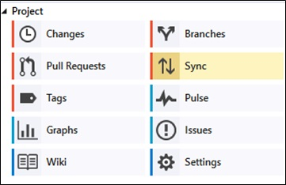
Click Push within the Outgoing Commits dropdown box.
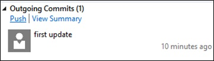
A loading bar appears within the Team Explorer – Synchronization side panel as changes are uploaded and will disappear once complete
Close Visual Studio.
The edited markdown file is now saved to the source control repository and has replaced the original online file.